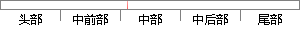

在WXS代码中，是通过引用API文件来实现request访问的，api.
片段位置图

相似结果|
相似片段 1：用户访问页面资源，StrutsAction连接点激活时，授权模块开始运行。本节结合模块各种API和关键代码的实现，说明如何通过基于关系数据库和XML文件的访问策略，实现对认证用户的授权
|
※ 片段修改建议 ※
近似词参考：- 通过：经由过程
- 引用：援用
- 访问：拜候 会见 接见 走访
系统自动生成语句：在WXS代码中，是经由过程援用API文件来实现request拜候的，api.
注：本片段修改建议为系统自动生成，仅供参考。